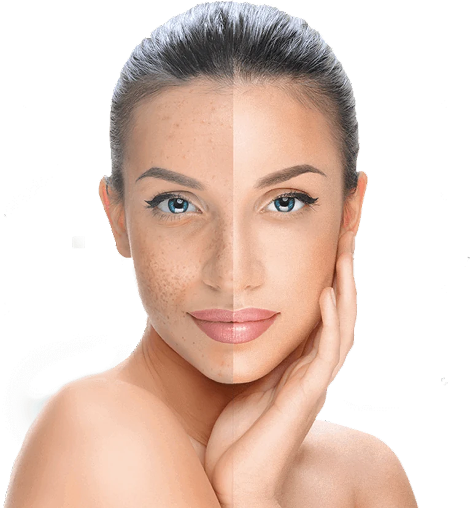
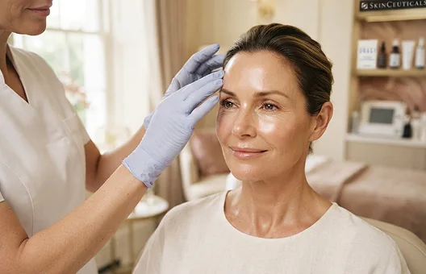
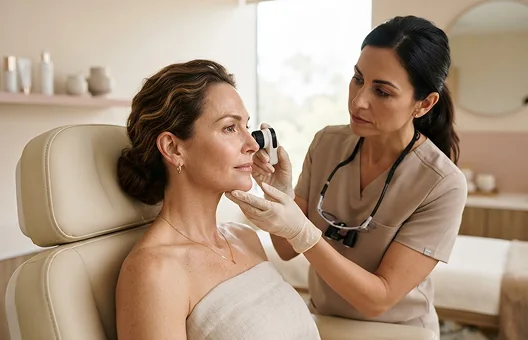
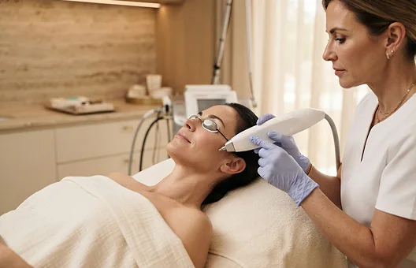

Médicos Especialistas
Orientação médica atenta, com tempo para discutir seus objetivos, adequação e alternativas.
Estética com intenção
Uma abordagem pensada para a pele e a medicina estética. Explore renovações sutis, com um plano de tratamento feito para você — e não para uma versão diferente de você.
Avaliação individual. Escolhas pensadas. Sem pressão.

Orientação médica atenta, com tempo para discutir seus objetivos, adequação e alternativas.
Explore opções de tratamento modernas, escolhidas para as necessidades da sua pele — nunca tecnologia por si só.
Uma abordagem individual para seus traços, pele e prioridades. Seu plano começa com uma conversa.
Tratamentos pensados
Descubra uma abordagem que respeita sua individualidade. Todo tratamento começa com o entendimento da sua pele.

Uma opção para suavizar a aparência das linhas de expressão, com dosagem ajustada ao seu movimento facial.
Saiba Mais
Explore volume e suporte de contorno sutis, orientados pelos seus traços e por uma avaliação individual.
Saiba Mais
Uma abordagem direcionada para textura e tom irregulares. Adequação e recuperação variam conforme pele e tratamento.
Saiba MaisAdequação, benefícios potenciais e riscos dependem de avaliação individual. Resultados variam. Todas as imagens são ilustrativas e não retratam pacientes reais.
A experiência do cuidado
“Tempo para perguntar, explicações claras e um plano que parecia pensado, não apressado.”
“O que importava para mim era ser ouvida. Uma conversa pensada tornou o próximo passo menos intimidador.”
“Um espaço calmo, uma abordagem sem pressa e espaço para decidir o que parecia certo para mim.”
Depoimentos e avaliações ilustrativos para este conceito apenas. Não são exibidas avaliações reais de pacientes.
Um pouco mais de clareza
Boas decisões começam com informações honestas. Traga suas dúvidas — não precisa ter tudo resolvido.
Faça uma perguntaComece com uma consulta individual. Discutiremos seus objetivos, histórico médico e pele, depois explicaremos opções adequadas, riscos e alternativas — incluindo a escolha de não realizar tratamento. Não há um plano que sirva a todos.
Varia conforme o procedimento, o tipo de pele e o seu histórico. Na avaliação, explicamos o que esperar antes, durante e depois de cada opção.
Não. Todo procedimento envolve riscos e depende de avaliação médica individual. Por isso, adequação e possíveis efeitos colaterais são discutidos antes de qualquer decisão.
Uma conversa sobre sua pele, seus objetivos e seu histórico, sem compromisso com tratamento. Você sai com clareza sobre as opções, não com pressa para decidir.
Todos os procedimentos envolvem riscos. Adequação, possíveis efeitos colaterais e recuperação são discutidos antes do tratamento.
Seu próximo capítulo, no seu ritmo
Uma consulta pessoal. Orientação clara. Espaço para decidir. Comece com uma conversa sobre sua pele e seus objetivos.